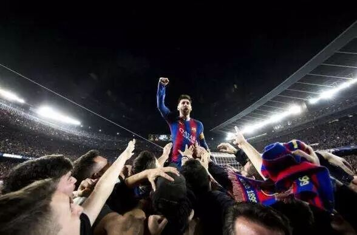
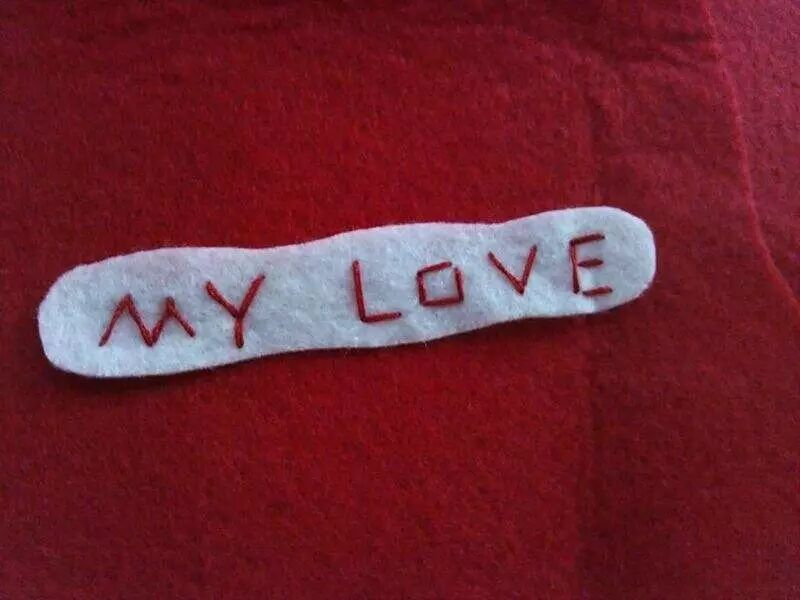

Table topic Part

Rencently a miracle just happened in the Nou Camp，we all were shocked by this incredible achievement which have never been accomplished by other clubs before. if you asked me what makes this miracle, i will tell you it's the persistence of all FCB players on that game, and the persistence of all cheers from the lovely audiences and fans, even it past so many days, but for me, it just like yesterday.
and now this week we will follow this topic-persistence to talk more, about ourselves, about the world, about others, and so on.
Prepared speech part
CC3-Flair
-My University
Yes you guess right, Flair is one of BUAA student, but not a common student,he has his special identity as a buaa student, and what story will he bring to us tomorrow night? let's go and wait~~
CC5-Grace
-On My Love

Miss Grace must have a lot of sweet words in her speeches i guess according to this extreme title, do you want to hear our beautiful grace wispher to you? you can't miss the meeting this friday night~~
Meet you at meeting~~~